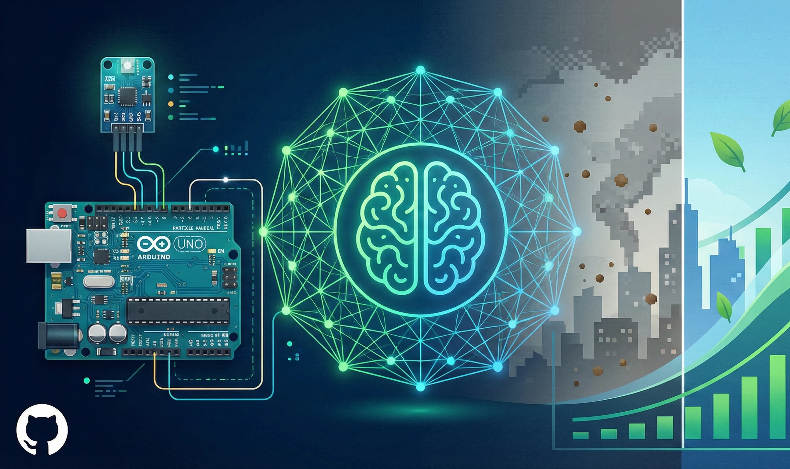
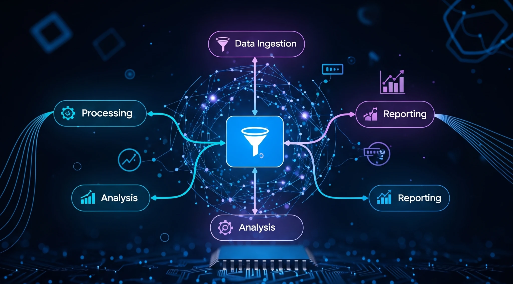
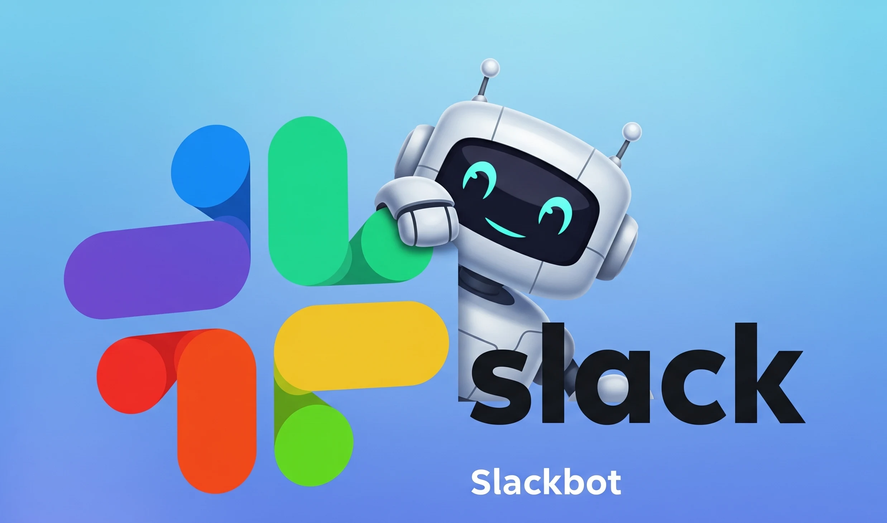
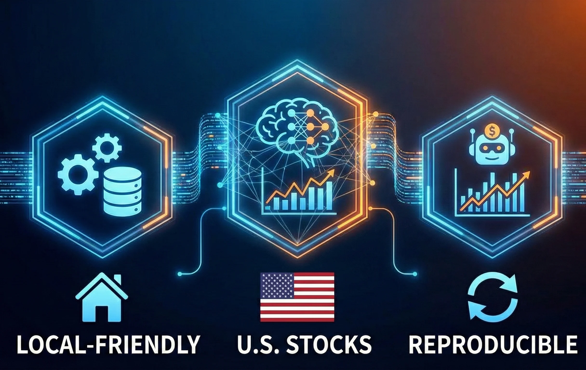

Projects
Things I've built & explored

Faster Diffusion
2025
Accelerating image generation with optimized diffusion model architectures and advanced sampling strategies.

Particle Pollution
2022
Machine learning research on air quality prediction using environmental sensor data and ensemble methods.

Digital Assets Pipeline
Repo
End-to-end analytics pipeline for digital asset data ingestion, transformation, and dashboard visualization.

Slack Python Q&A Bot
2025
Conversational Slack bot for answering Python questions using NLP and curated knowledge base retrieval.

Stock Prediction & Trading Pipeline
Ongoing
End-to-end local research pipeline for U.S. stock prediction and systematic trading — reproducible ETL feature store, Temporal Fusion Transformer forecasting, and backtesting harness.
© Abhijeet Ghildiyal